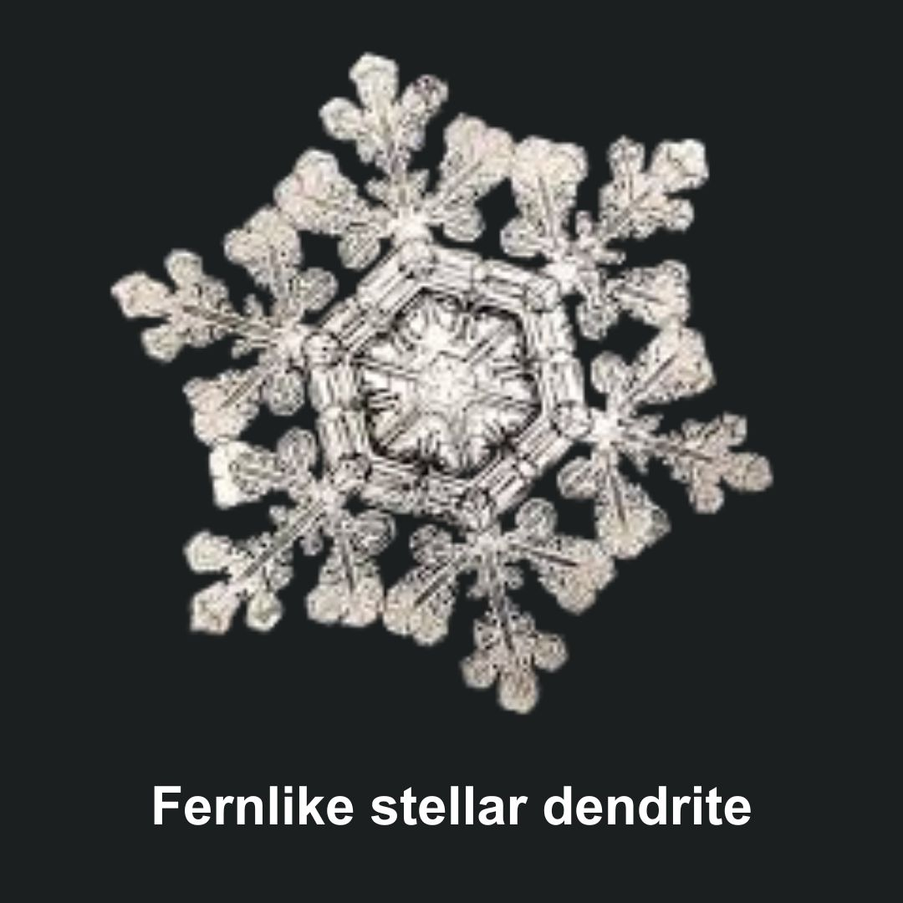
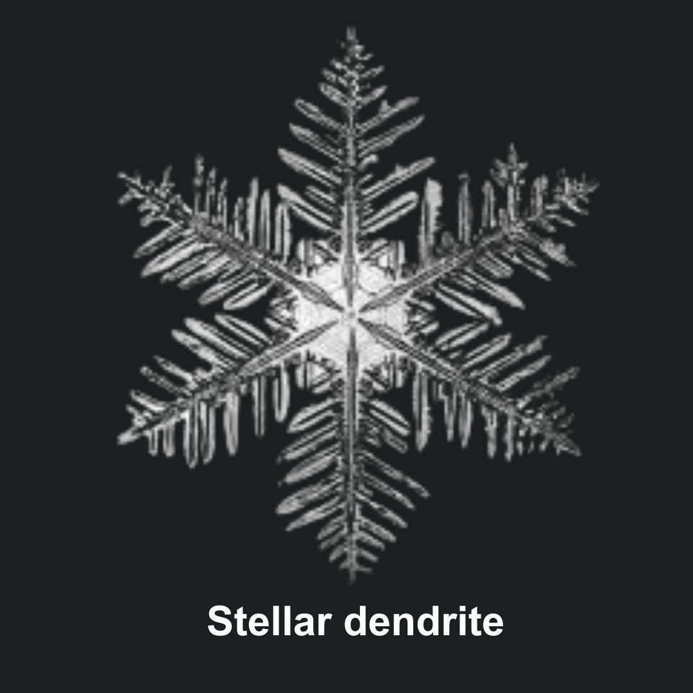
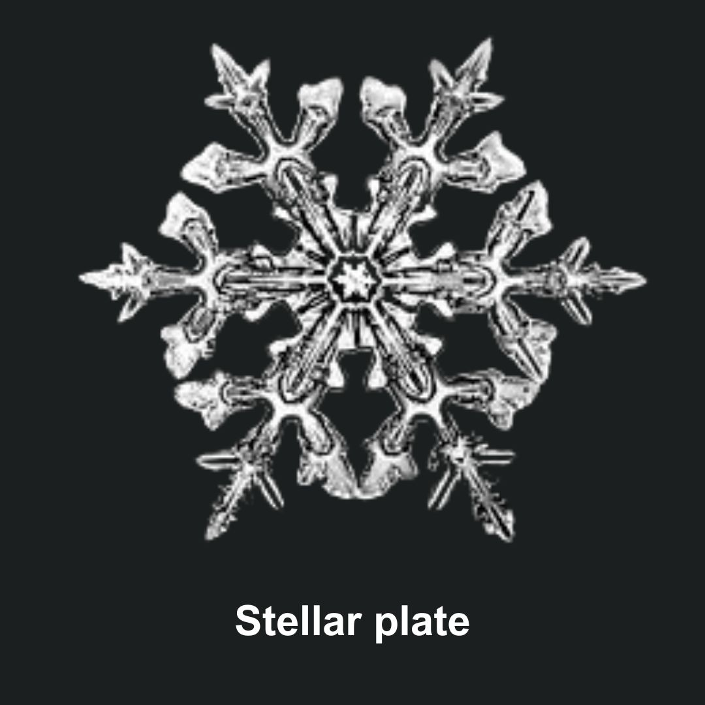

Investigate Different Snowflake Patterns
Snowflakes display a fascinating array of intricate shapes, with each one being a unique masterpiece formed by the delicate dance of water molecules in the atmosphere. Different types include the fernlike stellar dendrite, the classic stellar dendrite, and the geometric stellar plate. These distinct structures showcase the mesmerizing complexity and beauty that nature weaves into every individual snowflake, making each a tiny work of frozen art.


